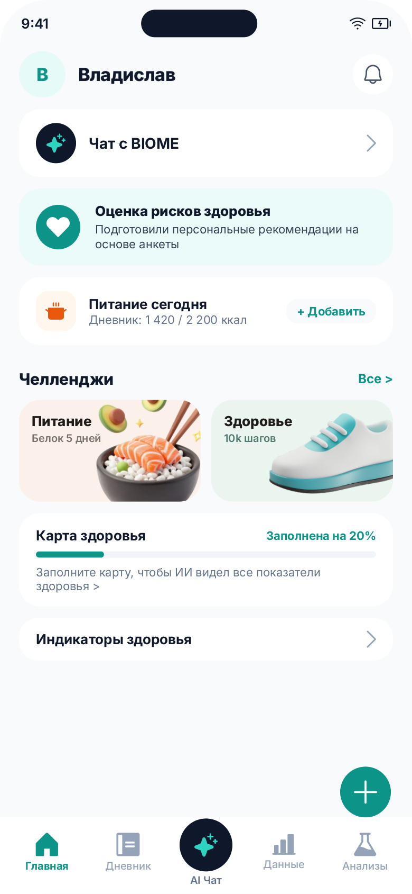
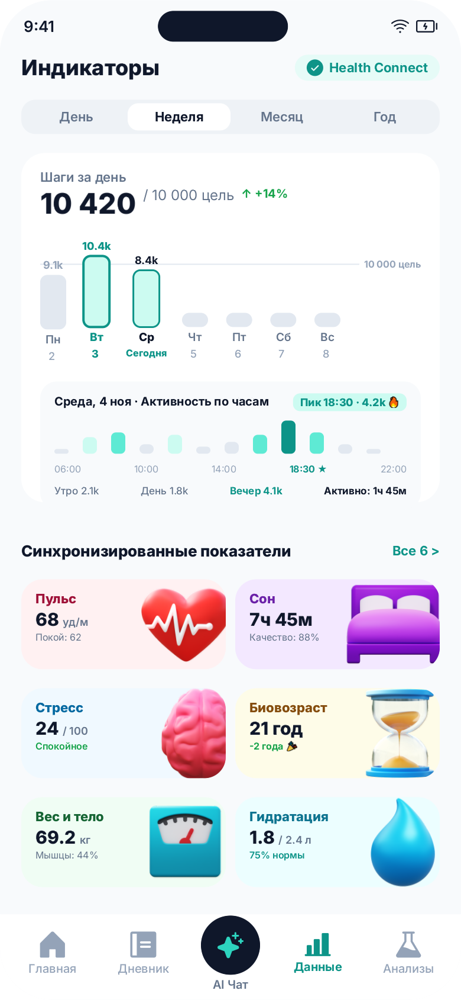
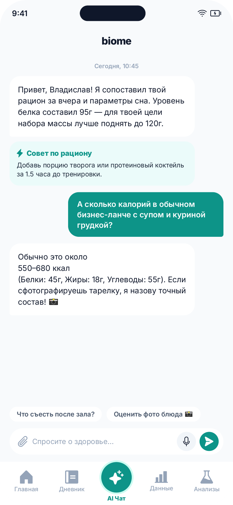

КЛЮЧЕВЫЕ ЭКРАНЫ
Обновленные экраны приложения
Нажмите на любой экран, чтобы открыть его в высоком разрешении. Переключатель темы в шапке меняет цвет всех макетов.
Главный экран (Dashboard & Hub)
Центральный хаб здоровья пользователя: контекстное приветствие, быстрый доступ к диалогу с AI, трекинг рациона и челленджи.
Иерархия первого экрана: Вместо нагромождения одинаковых карточек выделен ключевой AI-виджет и оценка рисков.
3D-карточки челленджей: Фотореалистичные объемные ассеты (питание / белок, здоровые привычки / 10k шагов) с вылетом за пределы плашки.
Сводка питания за день: Компактный счетчик калорий (1 420 / 2 200 ккал) с быстрой кнопкой добавления приема пищи.
Карта здоровья: Наглядная шкала прогресса заполнения (20%) вместо слепого перехода в профиль.
РЕДИЗАЙН 2026


Индикаторы здоровья и Дашборд шагов
Мониторинг физиологических показателей: глубокая аналитика недели с почасовой разбивкой и синхронизация метрик Health Connect.
Системные даты под шкалами: Даты расставлены чистой типографикой без визуального шума. Текущий день акцентирован подписью «Сегодня».
12-колоночная гистограмма активности: Внутрисуточный график шагов с динамическими столбиками, подсветкой вечернего пика (18:30) и временными маркерами.
Крупные 3D-модели показателей: Сердце (пульс), кровать (сон), мозг (стресс), песочные часы (биовозраст), весы и капля воды в единой стилистике.
Статус Health Connect: Аккуратный зеленый бейдж подключения вместо тяжелых баннеров авторизации.
РЕДИЗАЙН 2026


AI-Чат с персональным ассистентом
Умный диалог по здоровью: структурированные подсказки по рациону, быстрый анализ фото блюд и поддержка тренировок.
Карточки-сниппеты рекомендаций: Выделенные виджеты («Совет по рациону») внутри сообщений для моментального восприятия главного.
Быстрые контекстные чипсы: Кнопки «Что съесть после зала?», «Оценить фото блюда 📸» над инпутом для снижения барьера общения.
Эргономичный инпут: Поле ввода скрепки, микрофона и кнопки отправки отвязано от таб-бара и не создает оптического наезда при фокусе.
Активная AI-кнопка: Центральная кнопка таб-бара светится фирменным градиентом в активном состоянии, четко разделяя экраны.
РЕДИЗАЙН 2026
